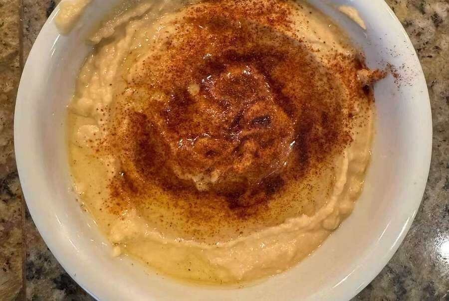

Excelent Simple Hummas Recipe

My favorite hummus recipe! With a few simple tricks, you can make the best creamy, smooth homemade hummus, and yes, it’s better than chemical processed store-bought.
Ingredients
- 1 (15oz) can chickpeas, drained or 1 ½ cups (250g) cooked chickpeas
- 1/4 cup (60ml) fresh lemon juice, 1 large lemon
- 1/4 cup (60ml) well-stirred tahini, try our homemade tahini recipe
- 1 small garlic clove, minced
- 2 tablespoons (30ml) extra-virgin olive oil, plus more for serving
- 1/2 teaspoon ground cumin
- Salt to taste
- 2 to 3 tablespoons (45ml) cold water or aquafaba
- Dash ground paprika
Instructions
- In the bowl of a food processor, combine the tahini and lemon juice and process for 1 minute. Scrape the sides and bottom of the bowl, then process for 30 seconds more. This extra time helps “whip” or “cream” the tahini, making the hummus smooth and creamy.
- Add the olive oil, minced garlic, cumin, and a 1/2 teaspoon of salt to the whipped tahini and lemon juice. Process for 30 seconds, scrape the sides and bottom of the bowl, and then process for another 30 seconds or until well blended.
- Drain the chickpeas. Then add half of the chickpeas to the food processor and process for 1 minute. Scrape the sides and bottom of the bowl, then add the remaining chickpeas and process them until thick and relatively smooth, 1 to 2 minutes.
- The hummus will likely be too thick and still have tiny bits of chickpea. To fix this, slowly add 2 to 3 tablespoons of cold water or aquafaba with the food processor turned on until you reach the perfect consistency.
- Taste and adjust as needed. Serve hummus with a drizzle of olive oil and a sprinkle of paprika, sumac, or Za’atar.
- Store homemade hummus in an airtight container and refrigerate for up to one week. Freeze, covered with a thin layer of olive oil, for up to one month.